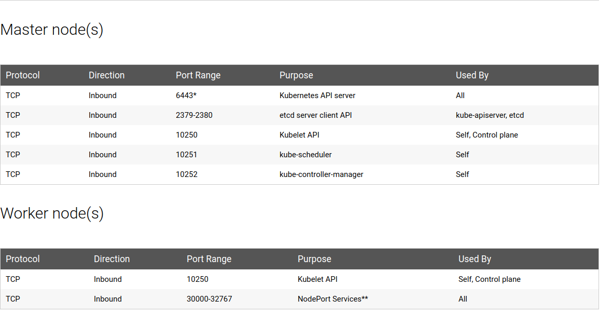

Kubernetes¶
Kubernetes Components¶
Control Plane Components (Master Nodes)¶
| Component Name | Summary | Runs As |
|---|---|---|
| kube-apiserver | Exposes the Kubernetes API from master nodes.The API server is the front end for the Kubernetes control plane. Can run several instances of kube-apiserver and balance traffic between those instances |
Static Pod |
| etcd | Consistent and highly-available key value store used as Kubernetes’ backing store for all cluster data |
Static Pod or Systemd service |
| kube-scheduler | Component that watches for newly created Pods with no assigned node, and selects a node for them to run on |
Static Pod |
| kube-controller-manager | Component that runs controller processesnode. Controllers include : Node Controller, Replication Controller, Endpoints Controller, Service Account & Token Controllers |
Static Pod |
Node Components(Worker Nodes)¶
| Component Name | Summary | Runs As |
|---|---|---|
| kubelet | An agent that runs on each node in the cluster. It makes sure that containers are running in a Pod |
System process |
| kube-proxy | kube-proxy is a network proxy that runs on each node in your cluster, implementing part of the Kubernetes Service concept |
Daemonset |
| Container Runtime | Is the software that is responsible for running containers. Kubernetes supported runtimes: Docker, rkt, runc and any [[https://github.com/opencontainers/runtime-spec][OCI runtime-spec]] implementation |
Systemd service |
Master and Worker nodes ports 
Generators¶
You can create the following resources using kubectl run with the --generator flag
| Resource | api group | kubectl command |
|---|---|---|
| Pod | v1 | kubectl run --generator=run-pod/v1 |
| Replication controller (deprecated) | v1 | kubectl run --generator=run/v1 |
| Deployment (deprecated) | apps/v1beta1 | kubectl run --generator=deployment/apps.v1beta1 |
| Job (deprecated) | batch/v1 | kubectl run --generator=job/v1 |
| CronJob (deprecated) | batch/v1beta1 | kubectl run --generator=cronjob/v1beta1 |
| CronJob (deprecated) | batch/v2alpha1 | kubectl run --generator=cronjob/v2alpha1 |
Configuration and Logs details of Kubernetes,Docker¶
| Description | Folder or File location |
|---|---|
| Config folder | /etc/kubernetes/ |
| Manifests dir | /etc/kubernetes/manifests |
| Certificate files | /etc/kubernetes/pki/ |
| Credentials to API server | /etc/kubernetes/kubelet.conf |
| Superuser credentials | /etc/kubernetes/admin.conf |
| kubectl config file | ~/.kube/config |
| Kubernets working dir | /var/lib/kubelet/ |
| Docker working dir | /var/lib/docker/, /var/log/containers/ |
| Etcd working dir | /var/lib/etcd/ |
| Network cni | /etc/cni/net.d/ |
| Log files | /var/log/pods/ |
| Kubelet logs | /var/log/messages, /var/log/pods/kube-system_kube-proxy*/kube-proxy/*.log |
| Kube-proxy | /var/log/pods/kube-system_kube-proxy*/kube-proxy/*.log |
| Kube-api-server | /var/log/pods/kube-system_kube-apiserver*/kube-proxy/*.log |
| Kube-controller | /var/log/pods/kube-system_kube-controller*/kube-proxy/*.log |
| Kube-scheduller | /var/log/pods/kube-system_kube-scheduler*/kube-scheduler/*.log |
| Env | /etc/systemd/system/kubelet.service.d/10-kubeadm.conf |
| Env | export KUBECONFIG=/etc/kubernetes/admin.conf |
| Audit logs | /var/log/audit/audit.log |
| Kubelet env file | /etc/kubernetes/kubelet.env |
| kubelet.service | /etc/systemd/system/kubelet.service |
| docker.service | /etc/systemd/system/docker.service |
Check health of cluster¶
| Description | command |
|---|---|
| Check cluster health | kubectl get componentstatus |
| Check etcd health | kubectl get --raw=/healthz/etcd |
Kubelet and Docker commands¶
| Description | Command or File location |
|---|---|
| Check Kubelet status | service kubelet status or systemctl status kubelet.service |
| Restart Kubelet | service kubelet restart or systemctl restart kubelet.service |
| Stop Kubelet | service kubelet stop or systemctl stop kubelet.service |
| Tail Kubelet logs | journalctl -u kubelet.service -f |
| Check Docker daemon status | service docker status or systemctl status docker.service |
| Restart Docker daemon | service docker restart or systemctl restart docker.service |
| Stop Docker daemon | service docker stop or systemctl stop docker.service |
| Tail Docker daemon logs | journalctl -u docker.service -f |
Kubernetes networking commands¶
| Description | Command |
|---|---|
| List interfaces on the host | ip link |
| Lists IP address assigned to the interfaces | ip addr |
| View the routing table | ip route |
| Add the entries to the routing table | ip route add 192.168.1.0/24 via 192.168.2.1 |
| Enable ipv4 forwarding | echo 1 > /proc/sys/net/ipv4/ip_forward |
| Enable ipv6 forwarding | echo 1 > /proc/sys/net/ipv6/ip_forward |
| list network namespaces | ip netns |
| Adding blue namespace | ip netns add blue |
| Exec to the particular namesapce | ip netns exec NAMESPACE_NAME ip link or ip -n red link |
Kubernetes cluster upgrade kubeadm way¶
| Description | Command |
|---|---|
| Install kubeadm new version | apt-get upgrade -y kubeadm=1.19.0-00 |
| Upgrade plan | kubeadm upgarade plan v1.19.0 |
| Apply upgrade plan | kubeadm upgrade apply v1.19.0 |
| Update kubelet | apt-get upgrade kubelet=1.19.0-00 |
| Update kubelet configuration | kubeadm upgarde node config --kubelet-version v1.19.0 |
| Restart kubelet | systemctl restart kubelet |
ETCD Backup & Restore¶
| Description | Command |
|---|---|
| ETCD Backup | ETCDCTL_API=3 etcdctl --endpoints=https://127.0.0.1:2379 --cacert="/etc/kubernetes/pki/etcd/server.crt" --cert="/etc/kubernetes/pki/etcd/ca.crt" --key="/etc/kubernetes/pki/etcd/ca.key" snapshot save /tmp/snapshot-pre-boot.db |
| ETCD Restore | ETCDCTL_API=3 etcdctl --endpoints=https://[127.0.0.1]:2379 --cacert=/etc/kubernetes/pki/etcd/ca.crt --name=master --cert=/etc/kubernetes/pki/etcd/server.crt --key=/etc/kubernetes/pki/etcd/server.key --data-dir /var/lib/etcd-from-backup --initial-cluster=master=https://127.0.0.1:2380 --initial-cluster-token etcd-cluster-1 --initial-advertise-peer-urls=https://127.0.0.1:2380 snapshot restore /tmp/snapshot-pre-boot.db |
Pod¶
| NAME | SHORTNAMES | APIGROUP | NAMESPACED | KIND | VERBS |
|---|---|---|---|---|---|
pods |
po |
- | true |
Pod |
[create delete deletecollection get list patch update watch] |
| Description | Kubectl Command |
|---|---|
| Create | kubectl run nginx --generator=run-pod/v1 --image=nginx |
| Create in particular namespace | kubectl run nginx --generator=run-pod/v1 --image=nginx -n NAMEPSPACE |
| Dry run,print object without creating it | kubectl run POD_NAME --generator=run-pod/v1 --image=nginx --dry-run -o yaml |
| Create from File | kubectl create -f pod.yaml |
| Create from File in particular namespace | kubectl create -f pod.yaml -n NAMEPSPACE |
| List pods | kubectl get po or kubectl get pod or kubectl get pods |
| List pods in all namespaces | kubectl get pods --all-namespaces or kubectl get pods -A |
| List pods with more information | kubectl get pods -owide |
| List pods information in custom columns | kubectl get pod POD_NAME -o custom-columns=CONTAINER:.spec.containers[0].name,IMAGE:.spec.containers[0].image |
| Verbose Debug information/describe pod | kubectl describe pod POD_NAME |
| Logs | kubectl logs POD_NAME |
| Logs (multi-container case) | kubectl logs POD_NAME -c CONTAINER_NAME |
| Tail pod logs | kubectl logs -f POD_NAME |
| Tail pods logs (multi-container case) | kubectl logs -f POD_NAME -c CONTAINER_NAME |
| Delete pod | kubectl delete pod POD_NAME or kubectl delete -f pod.yaml or kubectl delete pod/POD_NAME |
| Delete pod in particular namespace | kubectl delete pod POD_NAME -n NAMESPACE |
| Delete pod forcefully | kubectl delete pod my-pod --grace-period=0 --force |
| Get pod | kubectl get pod POD_NAME |
| Watch pod | kubectl get pod POD_NAME --watch |
| Patch pod | kubectl patch pod valid-pod -p '{"spec":{"containers":[{"name":"kubernetes-serve-hostname"}]}}' |
| Create and wrtie its spec to file | kubectl run POD_NAME --image=nginx --restart=Never --dry-run -o yaml > pod.yaml |
| List pod in Json output format | kubectl get pods -o json |
| List pod in YAML output format | kubectl get pods -o yaml |
| Run command in existing pod | kubectl exec POD_NAME -- ls / |
| Run command in existing pod (multi-container case) | kubectl exec POD_NAME -c CONTAINER_NAME -- ls / |
| Exec to pod | kubectl exec -it POD_NAME bash |
| List Kubernetes critical pods | kubectl get pods -n kube-system |
ReplicaSet¶
| NAME | SHORTNAMES | APIGROUP | NAMESPACED | KIND | VERBS |
|---|---|---|---|---|---|
replicasets |
rs |
apps,extensions |
true |
ReplicaSet |
[create delete deletecollection get list patch update watch] |
| Verb Description | Kubectl Command |
|---|---|
| create | kubectl create -f replicaset.yaml |
| List | kubectl get rs or kubectl get replicaset or kubectl get replicasets |
| List replicasets with more information | kubectl get rs -owide |
| List in all namespaces | kubectl get rs --all-namespaces or kubectl get rs -A |
| Delete | kubectl delete rs REPLICASET_NAME or kubectl delete -f replicaset.yaml |
| Get | kubectl get rs REPLICASET_NAME |
Deployments,Scale,Rolling Updates & Rollbacks¶
| NAME | SHORTNAMES | APIGROUP | NAMESPACED | KIND | VERBS |
|---|---|---|---|---|---|
deployments |
deploy |
apps,extensions |
true |
Deployment |
[create delete deletecollection get list patch update watch] |
| Verb Description | Kubectl Command |
|---|---|
| Deployment Strategy Types | Rolling-Update or Recreate |
| Create Deployment | kubectl create deployment DEPLOYMENT_NAME --image=busybox |
| Run deployment with 2 replicas | kubectl run POD_NAME --image=nginx --replicas=2 --port=80 |
| List deployments | kubectl get deploy or kubectl get deployment or kubectl get deployments |
| List deployments in all namespaces | kubectl get deploy --all-namespaces or kubectl get deploy -A |
| List deployments in particular namespace | kubectl get deploy -n NAMESPACE |
| List deployments with more information | kubectl get deploy -owide |
| Delete deployment | kubectl delete deploy DEPLOYMENT_NAME or kubectl delete -f deployment.yaml |
| Get particular deployment | kubectl get deploy DEPLOYMENT_NAME |
| Run deployment and expose it | kubectl run DEPLOYMENT_NAME --image=nginx --port=80 --expose |
| Update the nginx Pods to use the nginx:1.9.1 image instead of the nginx:1.7.9 image | kubectl set image deployment/nginx-deployment nginx=nginx:1.9.1 --record |
| Edit the Deployment | kubectl edit deploy/DEPLOYMENT_NAME |
| Deployment rollout status | kubectl rollout status deploy/DEPLOYMENT_NAME |
| Deployment rollout history | kubectl rollout history deploy/DEPLOYMENT_NAME |
| Rolling back deployment to previous version | kubectl rollout undo deploy/DEPLOYMENT_NAME |
| Scaling deployment | kubectl scale --replicas=2 deploy/DEPLOYMENT_NAME |
| Pausing deployment | kubectl rollout pause deploy/DEPLOYMENT_NAME |
| Resuming deployment | kubectl rollout resume deploy/DEPLOYMENT_NAME |
| Verbose Debug information/describe deployment | kubectl describe deploy/DEPLOYMENT_NAME |
| Describe all deployments | kubectl describe deployments |
| Watch deployment | kubectl get deploy/DEPLOYMENT_NAME --watch |
DaemonSet¶
| NAME | SHORTNAMES | APIGROUP | NAMESPACED | KIND | VERBS |
|---|---|---|---|---|---|
daemonsets |
ds |
apps,extensions |
true |
DaemonSet |
[create delete deletecollection get list patch update watch] |
| Verb Description | Kubectl Command |
|---|---|
| List daemonsets | kubectl get ds or kubectl get daemonset or kubectl get daemonset |
| List daemonsets in all namespaces | kubectl get ds --all-namespaces or kubectl get ds -A |
| List daemonsets with more information | kubectl get ds -owide |
| Delete | kubectl delete ds DAEMONSET_NAME or kubectl delete -f daemonset.yaml |
| Get particular daemonset | kubectl get ds DAEMONSET_NAME |
| Verbose Debug information/describe Daemonset | kubectl describe ds/DAEMONSET_NAME |
Jobs¶
| NAME | SHORTNAMES | APIGROUP | NAMESPACED | KIND | VERBS |
|---|---|---|---|---|---|
jobs |
- | batch |
true |
Job |
[create delete deletecollection get list patch update watch] |
| Verb Description | Kubectl Command |
|---|---|
| Create | kubectl create job my-job --image=busybox |
| Create a job with command | kubectl create job my-job --image=busybox -- date |
| Create a job from a CronJob named "a-cronjob" | kubectl create job test-job --from=cronjob/a-cronjob |
| List jobs | kubectl get jobs or kubectl get job |
| List jobs in all namespaces | kubectl get jobs --all-namespaces or kubectl get jobs -A |
| List with more information | kubectl get job -owide |
| Delete | kubectl delete jobs JOB_NAME or kubectl delete -f job.yaml |
| Get particular cronjob | kubectl get cj cronjob_NAME |
| Verbose Debug information/describe job | kubectl describe jobs/CRRONJOB_NAME |
CronJob¶
| NAME | SHORTNAMES | APIGROUP | NAMESPACED | KIND | VERBS |
|---|---|---|---|---|---|
cronjobs |
cj |
batch |
true |
CronJob |
[create delete deletecollection get list patch update watch] |
| Verb Description | Kubectl Command |
|---|---|
| Create with schedule | kubectl create cronjob CRONJOB_NAME --image=busybox --schedule="*/1 * * * *" |
| List | kubectl get cj or kubectl get cronjob or kubectl get cronjobs |
| List in all namespaces | kubectl get cj --all-namespaces or kubectl get cj -A |
| List with more information | kubectl get cj -owide |
| Delete | kubectl delete cj CRONJOB_NAME or kubectl delete -f cronjob.yaml |
| Get particular cronjob | kubectl get cj cronjob_NAME |
| Verbose Debug information/describe cronjob | kubectl describe cj/CRRONJOB_NAME |
Service¶
| NAME | SHORTNAMES | APIGROUP | NAMESPACED | KIND | VERBS |
|---|---|---|---|---|---|
services |
svc |
- |
true |
Service |
[create delete get list patch update watch] |
| Service Type | Description | Kubectl Command |
|---|---|---|
| ClusterIP | Create service | kubectl create service clusterip my-cs --tcp=5678:8080 |
| Create service in headless mode | kubectl create service clusterip my-cs --clusterip="None" |
|
| ExternalName | Create an ExternalName service | kubectl create service externalname my-ns --external-name example.com |
| LoadBalancer | Create a LoadBalancer service | kubectl create service loadbalancer my-lbs --tcp=5678:8080 |
| NodePort | Create a NodePort service | kubectl create service nodeport my-ns --tcp=5678:8080 |
| Verb Description | Kubectl Command |
|---|---|
| List | kubectl get service or kubectl get svc |
| List in all namespaces | kubectl get service --all-namespaces or kubectl get svc -A |
| List with more information | kubectl get svc -owide or kubectl get service -owide |
| Delete | kubectl delete svc SERVICE_NAME or kubectl delete -f service.yaml |
| Get particular service | kubectl get service SERVICE_NAME |
| Verbose Debug information/describe service | kubectl describe svc/SERVICE_NAME |
Namespace¶
| NAME | SHORTNAMES | APIGROUP | NAMESPACED | KIND | VERBS |
|---|---|---|---|---|---|
namespaces |
ns |
- |
false |
Namespace |
[create delete get list patch update watch] |
| Verb Description | Kubectl Command |
|---|---|
| List | kubectl get namespaces or kubectl get ns |
| Create | kubectl create ns TEST |
| Delete | kubectl delete ns TEST or kubectl delete -f namespace.yaml |
| Get particular namespace | kubectl get ns TEST |
| Verbose Debug information/describe service | kubectl describe ns/TEST |
Serviceaccounts¶
| NAME | SHORTNAMES | APIGROUP | NAMESPACED | KIND | VERBS |
|---|---|---|---|---|---|
serviceaccounts |
sa |
- |
true |
ServiceAccount |
[create delete deletecollection get list patch update watch] |
| Verb Description | Kubectl Command |
|---|---|
| List | kubectl get sa |
| Create | kubectl create serviceaccount my-service-account |
| Delete | kubectl delete serviceaccount my-service-account or kubectl delete -f my-service-account.yaml |
| Get particular sa | kubectl get sa my-service-account |
| Verbose Debug information/describe service | kubectl describe sa/my-service-account |
Node Maintenance¶
| Description | Command |
|---|---|
| Mark node as unschedulable | kubectl cordon $NODE_NAME |
| Mark node as schedulable | kubectl uncordon $NODE_NAME |
| Drain node in preparation for maintenance | kubectl drain $NODE_NAME |
| Drain node with grace period of 15 mins | kubectl drain $NODE_NAME --grace-period=900 |
| Drain node forcefully | kubectl drain $NODE_NAME --force |
| Ignore DaemonSet-managed pods while draining node | kubectl drain $NODE_NAME --grace-period=900 --ignore-daemonsets=true |
Events¶
| Description | Command |
|---|---|
| View all events | kubectl get events --all-namespaces or kubectl get events -A |
| List Events sorted by timestamp | kubectl get events --sort-by=.metadata.creationTimestamp |
| List Events only in kube-system namespace | kubectl get events -n kube-system |